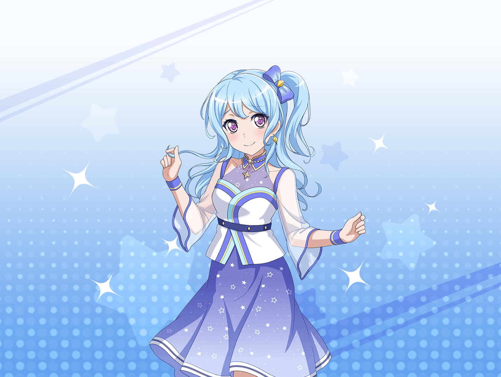

羽沢珈琲店
花音
ん～、今日もいい香り……
花音
あ……{{userName}}さん！
花音
あ、あの……私の前の席、空いてますけど……
よかったら、どうぞ……
花音
あ、ご、ごめんなさいっ……
{{userName}}さんの都合も聞かないで
いきなりこんなこと言って……
花音
いいんですか？
わぁ、ありがとうございます！
花音
聞いてもらいたいことがいっぱいあったから、
すごくうれしいです
花音
えっとですね、
まずはバイトのことなんですけど……
花音
この間、商店街で七夕祭りがあったの
知ってますか？
花音
あの日、お店がすごく混んでて……
花音
彩ちゃんと一緒にシフト入ってたんですけど
ちゃんと役割分担ができてるから、
息がぴったりですごく仕事がしやすかったんですよ
花音
たぶん、あの日一緒に組んだのが彩ちゃんじゃなかったら
お客さんをいっぱい待たせることになっちゃったと思います。
本当に彩ちゃんがパートナーでよかったです
花音
そのあと、シフトがあがってから彩ちゃんと少しだけ
七夕祭りを見てまわれたんです
花音
すっごい人だったんですけど……楽しかったです♪
花音
短冊にお願い事を書いたり、
屋台のごはんを食べたり……
花音
１日働いたあとだったから、ついついたくさん
食べちゃったりして……えへへ♪
花音
短冊には私も彩ちゃんもバンドのことを書いていたんです。
偶然ですよね
花音
あと、聞いてもらいたいことは……あ、そうそう！
１時間後
花音
……ふぅ、いっぱい話すと
喉が渇いちゃいますね。
アイスティーがおいしいです
花音
今日はありがとうございました。
私の話、いっぱい聞いてくれて
花音
あの……もしよかったら、
また私の話聞いてくれますか？
花音
本当ですか！
えへへ、ありがとうございます。
それじゃあ、次もまた、よろしくお願いしますね